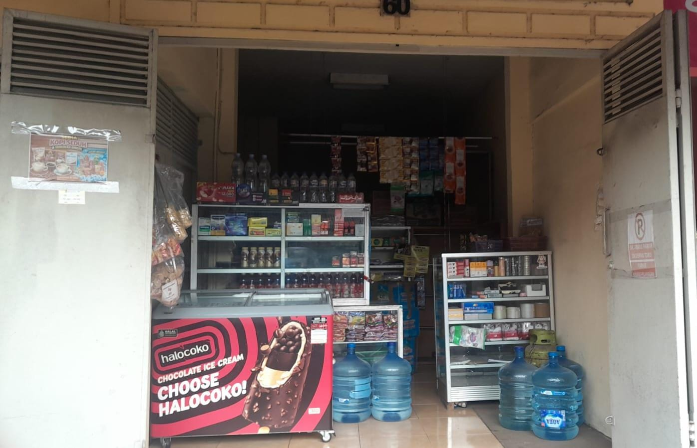

Sedia Gas LPG 3kg bersubsidi resmi, Indomie Mi Goreng, Kopi Kapal Api renceng, Teh Pucuk dingin, dengan jujur dan layanan antar ke rumah.

Peralatan terkalibrasi pas hingga gram terkecil, hak pembeli selalu terjaga amanah.
Gas LPG 3kg bersegel resmi Pertamina, mie dan minuman original kualitas terjamin.
Gratis ongkir radius 2 km minimal belanja Rp 50.000, bayar di tempat (COD) praktis.
Hubungi 0822-9552-5153, pesanan langsung kami siapkan tanpa antre panjang.
Stok selalu segar setiap hari dengan harga eceran maupun kartonan ramah di kantong.
Warung kelontong ramah tetangga yang tumbuh dan melayani masyarakat Jalan Cinehel, Kelurahan Nagarasari.
Visi: Menjadi toko kelontong berbasis komunitas yang paling dipercaya di Kelurahan Nagarasari dengan menghadirkan Gas LPG, makanan instan, minuman harian, dan plastik dengan pelayanan hangat dan kemudahan pemesanan WhatsApp.
Misi: Menjamin ketersediaan barang kebutuhan pokok setiap saat, menjaga stabilitas harga yang bersahabat bagi warga sekitar, dan memberikan kemudahan pengantaran langsung ke pintu rumah.
Pilih produk kebutuhan dapur Anda, klik tambah ke keranjang untuk memesan langsung.
Paket kombinasi hemat dengan potongan harga langsung siap diantar ke rumah.
Solusi masak harian lengkap: Gas 3kg + Mie + Kopi seduh.
Kombinasi mantap kopi sachet, teh pucuk, dan mi instan.
Belanja tanpa repot keluar rumah, kurir toko langsung meluncur ke teras Anda.
Pangkalan toko kami beralamat di Jalan Cinehel No. 60 RT 04 RW 04, Kelurahan Nagarasari, Tasikmalaya. Melayani seluruh wilayah Nagarasari, Cinehel, Cipedes, dan sekitarnya.
Tanya Jangkauan Alamat via WAKepuasan dan kepercayaan warga Jalan Cinehel adalah amanah utama TOKO 60.
"Alhamdulillah langganan tukar gas 3kg di TOKO 60 cepat sekali diantar ke dapur, sekalian beli Indomie goreng dan plastik. Mantap!"
Ibu Ratna Susanti"Toko kelontong paling komplit di Jalan Cinehel. Kopi Kapal Api dan Teh Pucuk selalu dingin, kresek JEEP 15 juga tebal."
Pak Bambang Haryono"Pelayanan sangat ramah, respon WA di 0822-9552-5153 gerak cepat. Sukses selalu untuk TOKO 60!"
Mbak Dwi LestariSilakan isi formulir di bawah ini untuk mengirim pesan atau langsung chat WhatsApp pemilik toko.